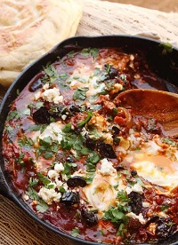

Shakshuka
Poached eggs in tomato sauce

-
Preparation Time
10 min
-
Total Time
35
-
Serves
4 to 6
Though it is North African in origin, today shakshuka is popular throughout the Middle East (particularly in Israel, where it may as well be one of the national dishes) and in hip neighborhood diners all over the coastal U.S.
Ingredients
-
3
tablespoons (45ml) extra-virgin olive oil, plus more for drizzling
-
1
medium onion, thinly sliced
-
1
large red pepper
-
1
fresh small hot chile
-
2 to 3
cloves garlic, thinly sliced
-
1 1/2
tablespoons (15g) sweet Hungarian or smoked Spanish paprika
-
2
teaspoons (8g) whole or ground cumin seeds
-
1
(28-ounce; 800g) can whole peeled tomatoes, crushed by squeezing between your fingers or with a pastry blender
-
Kosher salt and freshly ground black pepper
-
Large handful minced cilantro, parsley, or a mix
-
6
large eggs
-
Sliced oil-cured black olives, feta cheese, and/or artichoke hearts, for serving (all optional)
-
Crusty bread, for serving
Steps
- 1. Heat olive oil in a large, deep skillet or straight-sided sauté pan over high heat until shimmering. Add onion, red pepper, and chile and spread into an even layer. Cook, without moving, until vegetables on the bottom are deeply browned and beginning to char in spots, about 6 minutes. Stir and repeat. Continue to cook until vegetables are fully softened and spottily charred, about another 4 minutes. Add garlic and cook, stirring, until softened and fragrant, about 30 seconds. Add paprika and cumin and cook, stirring, until fragrant, about 30 seconds. Immediately add tomatoes and stir to combine (see notes). Reduce heat to a bare simmer and simmer for 10 minutes, then season to taste with salt and pepper and stir in half of cilantro or parsley.
- 2. Using a large spoon, make a well near the perimeter of the pan and break an egg directly into it. Spoon a little sauce over edges of egg white to partially submerge and contain it, leaving yolk exposed. Repeat with remaining 5 eggs, working around pan as you go. Season eggs with a little salt, cover, reduce heat to lowest setting, and cook until egg whites are barely set and yolks are still runny, 5 to 8 minutes.
- 3. Sprinkle with remaining cilantro or parsley, along with any of the optional toppings. Serve immediately with crusty bread.